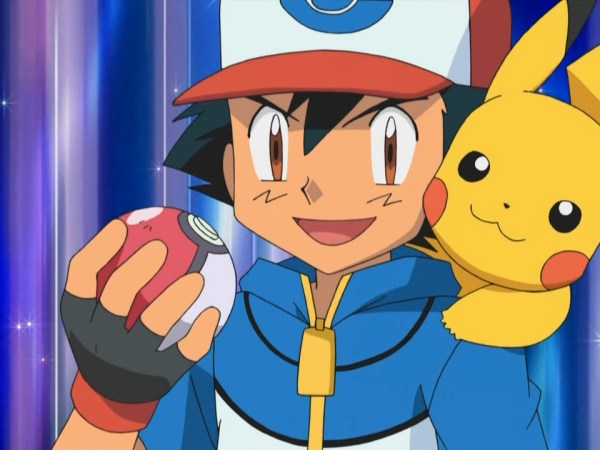

Sinopse:
Depois que ele completa 10 anos, Ash Ketchum (Satoshi no Japão) tem permissão para
começar sua jornada no mundo dos Pokémon e sonha em se tornar um mestre Pokémon. No dia em que
ele receberia seu primeiro Pokémon, Ash acorda em pânico, tendo dormido demais. O Professor Carvalho,
o pesquisador local de Pokémon, já doou os três Pokémon iniciais de Kanto (Bulbasaur, Charmander e Squirtle)
a novos Treinadores Pokémon quando Ash finalmente chega atrasado ao Laboratório de Carvalho. O único Pokémon
que ele deixou é um Pikachu, que ele dá para Ash. Determinado a fazer isso em sua jornada, Ash faz o melhor
para fazer amizade com Pikachu, mas ele não confia nele e se recusa a voltar para a sua Pokébola, mesmo atacando
Ash com seus poderes elétricos. É só depois que Ash protege Pikachu de um grupo de Spearow irritados que Pikachu
percebe o quanto Ash se preocupa com ele, levando-o a salvar Ash. Depois, ambos vêem um Pokémon misterioso e não
identificável que estimula os dois a trabalharem para o objetivo de Ash.
Ao longo do caminho, Ash faz muitos amigos humanos e Pokémon enquanto ele trabalha no ranque das muitas Ligas
Pokémon do mundo. Através da região de Kanto, Ash faz amizade com a treinadora de Pokémon de água e antiga Líder
de Ginásio da Cidade de Cerulean, Misty Willams (Kasumi), e o Líder de Ginásio da Cidade de Pewter, Brock
Harrison (Takeshi) e durante todo o tempo frustrando os planos do trio Jessie, James e Meowth, e enquanto lida
com seu rival de infância, Gary Carvalho, neto do Professor Carvalho, que também é treinador de Pokémon e
sempre se mantém à frente dele.
| Pokemón | Episódios | Pokemón | Episódios |
| O Início/Ouro e Prata | XY | ||
| Rubi e Safira | Sol e Lua | ||
| Diamante e Pérola | Sword and Shield | ||
| Preto e Branco |
